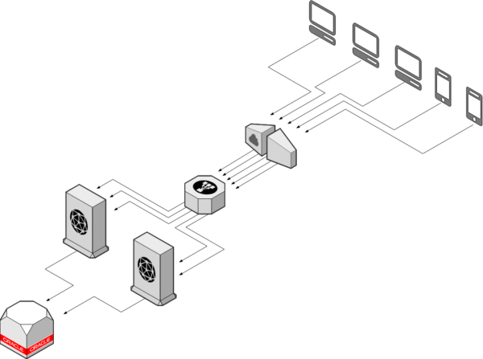
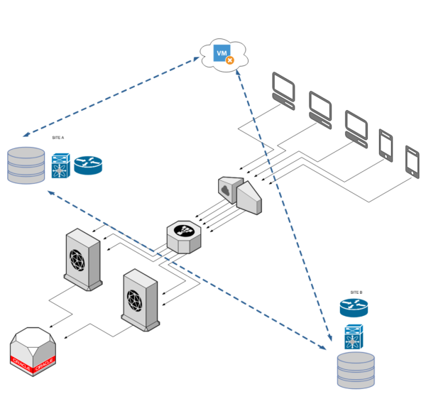
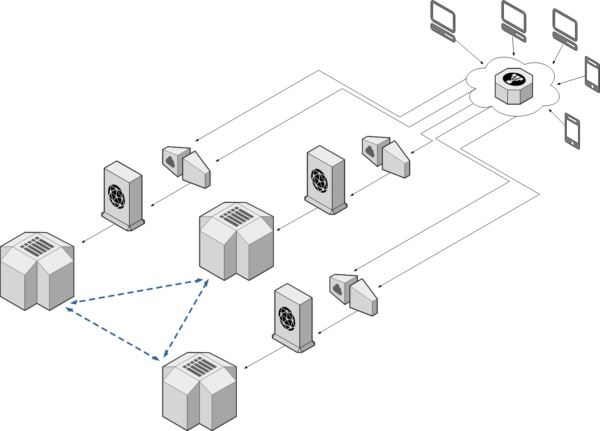

What about too complex IT-Infrastructures?¶

IT infrastructures are evolving fast and they are not becoming simpler. The more flexibility is requested from the application layer, the more complexity is added to the network layer.
From RFC1925:
(6) It is easier to move a problem around (for example, by moving the problem to a different part of the overall network architecture) than it is to solve it. (6a) (corollary). It is always possible to add another level of indirection.
Complexity is like entropy: moving a problem around, increases overall complexity. In other words, solving an application problem at the network layer will increase the complexity, referred especially in the operation activities.
But what is solved in the network layer rather than in applications?¶
For mainly historical reasons, applications require L2 adjacency, in other words, it's expected that application servers are in the same network. In most cases that is not a strict requirement, but it's a design assumption. Especially legacy applications are implemented "to work", not "to scale". Because of that, applications are developed as simply as possible, putting one or two clustered application servers in the same network (L2 adjacency), connected to a local database cluster.

And they work, as expected, but...
What happens when applications must geographically scale between data centers?
And...
What happens when applications must be secured offline in a different site for disaster recovery purposes?
One of the common requirements nowadays is to have applications spanning between Data Centers. So that issues in one Data Center won't decrease the availability. But because application clustering usually expects a local adjacency, local networks must be extended (stretched) between sites. This is requested because initially applications are designed without thinking about geographic availability.
Now it's obvious that solving an application design issue at the networking layer, will increase the overall complexity.
How L2 adjacency can be satisfied by using the network?¶
Many small companies prefer the simple way, without asking if they are doing things right. A couple of cables carry all networks (VLANs) between two sites. This can satisfy the requirements of L2 adjacency without adding any additional complexity. That is the way followed by many small and medium companies: cost-effective, easy to implement, and easy to manage.
But a couple of cables trunking all networks does not isolate the two interconnected data centers, so any L2 issue in one site will impact the other site too (packet storm, STP issue...).
In the last years, many technologies have been developed to address these requirements, e.g OTV, FabricPath, VXLAN (and iVXLAN), Geneve... All of them "should" give a reasonable availability and isolation. The term "should" is used because the implementations do not usually follow the correct guidelines and the overall availability is less than expected.

We can deduct that maintaining legacy applications and providing them with scalability which is not designed for them, leads to costs.
- Buying equipment to support new technologies
- Training technical staff
- Adapting procedures for provisioning and operation
- Operational time increases because of the overall complexity
How to design scalable applications?¶
This would not be an exhaustive post regarding application design, but we should remember that:
- Silos applications should be avoided
- Databases should be distributed and replicated across sites
- File servers should be distributed too and should expose files using APIs (hopefully via HTTP), not filesystems (i.e. NFS, SMB/CIFS)
- Application servers should be stateless
- L2 adjacency and multicast requirements should be avoided
- Networks can always fail and this should not have an impact on application performance or availability at all
The last point is especially dedicated to all programmers that think that network can never fail. And the result of that assumption always makes applications crash in the event of:
- L2 (STP) or L3 (i.e. BGP) network convergence
- Firewall or load balancer failover (sometimes upgrades do not preserve sessions)
- Database failover
It's not a secret that famous internet applications (Google, Facebook, LinkedIn, Twitter...) are designed to geographically scale and they don't need L2 adjacency at all.

Conclusion¶
Even if it does not make sense to me, many companies still prefer to invest money rather than redesign applications to be scalable and distributed. That's OK if it's supported by deep analysis.
Because designing a stretched Data Center spanning two or more sites and adding one more site as disaster recovery could be very complex and requires understanding both: the big picture and each detail. Be sure, you're not compiling the bill of material without fully understanding where you want to go in the next few years. Moreover be aware that you should start to design applications in the right way, standardizing and automating everything that can be automated. Automation is the key to being competitive. So be sure you're approaching the right way.